磁盘管理
目前所有的操作系统所用来存储的介质都是硬盘（分为固态硬盘和机械硬盘）。在Windows操作系统中则以磁盘可视化来显示，也就是我们常说的C盘、D盘、E盘等等。那么为什么要分盘呢？打个比方，如果把整个磁盘比作一个“家”的话，那么像C盘、D盘、E盘这些就像是“家”的各个区域，比如C盘是客厅，D盘是书房，E盘是储物间，而重装系统则是搬家。
如果不分盘的话，就像你的家没有区域划分，干什么都在一个区域，一旦“失个火”全都没了。再比如你如果要搬家的话，是不是要找重要的东西带去新家？没有区域划分的家会一团乱，诚然最后也能找齐，但花费的时间那就多了。或者说，重装系统的时候非常麻烦，因为要去进行文件备份才能开始重装系统，这是非常麻烦的一件事。因为重装系统需要格式化系统盘并重新写入系统，只有一个盘的话会全部清空。
如果一开始就分盘各司其职的话，那么一切都会方便的多。就像一个书架，各种书按分类摆放整齐，找的时候一眼就能找的，效率直接翻倍。比如系统盘一般默认是C盘（但不能就以为C盘一定是系统盘），里面只放系统文件和默认安装C盘且无法更改路径的软件，而D盘则作为软件安装盘，所有能够更改路径的软件都安装在这里，E盘则作为文件备份盘，日常存储软件安装包和你所有重要的文档、图片、视频什么的。这样做的好处是，万一你的电脑需要重装系统，不需要再去备份文件，直接格式化C盘和D盘，E盘不用动，再将系统写进C盘，重装完成还可以直接进E盘将软件安装包直接拿到D盘安装，还不需要去网上再一个一个下。这样真的很省时省力。
分盘步骤
个人建议：C盘100G、E盘100G，剩余的给D盘装软件，硬盘容量够大随意，硬盘容量不够的优先保障C盘和D盘的容量。 比如我现在使用的虚拟机，用的是Win11，只有一个399G大小的C盘，我想再分出来D盘和E盘。（ps：更改快速访问文件夹位置在更改快速访问存储位置）
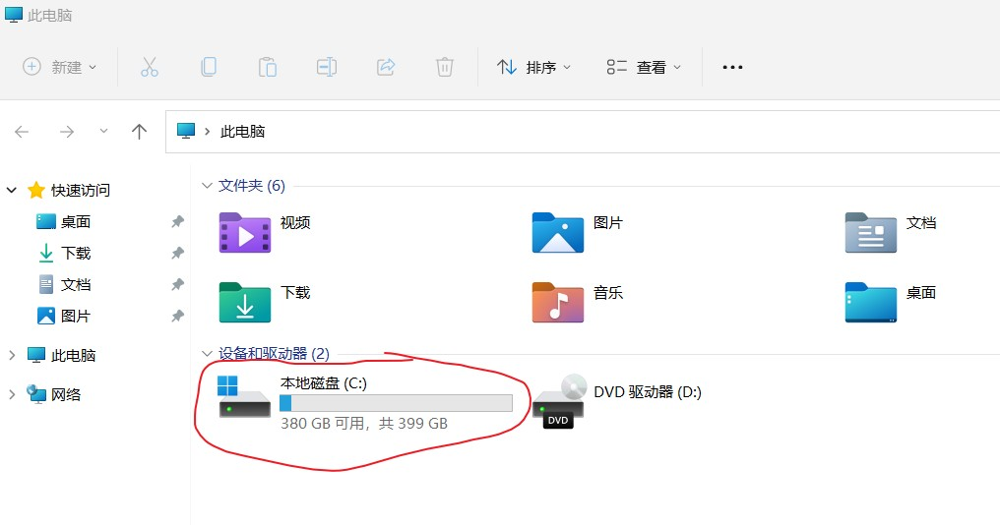 第一步：右键桌面此电脑——>管理 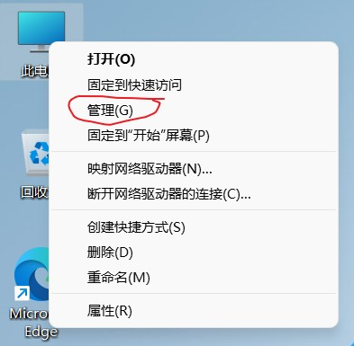 第二步：存储——>磁盘管理 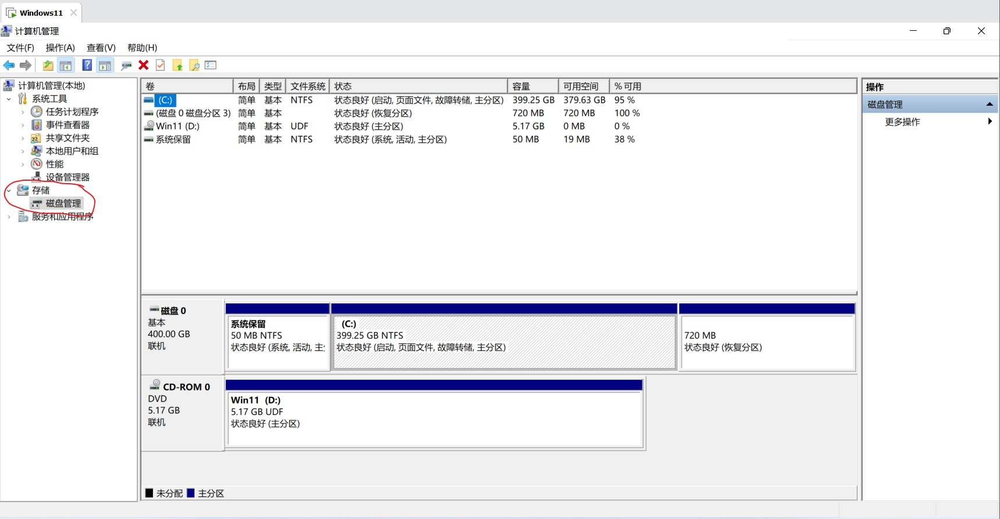 第三步：磁盘0——>C盘（如果有D盘且空间够大的话，建议从D盘分） 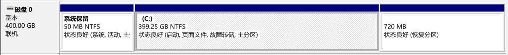 第四步：压缩卷 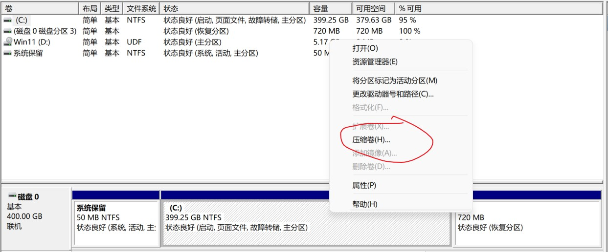 第五步：输入压缩空间量 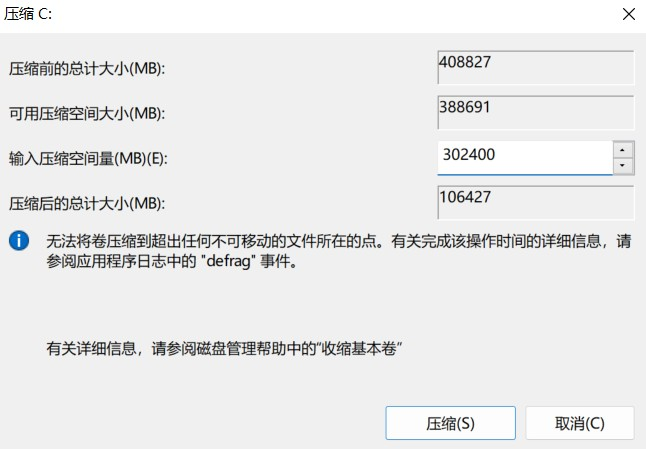 第六步：压缩出未使用空间以创建D盘 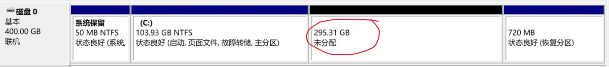 第七步：未使用空间——>右键新建简单卷 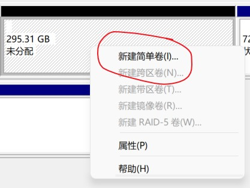 第八步：新建简单卷 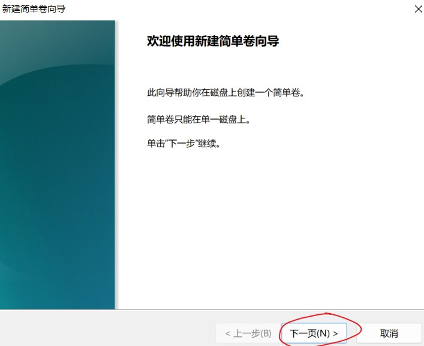 第九步：新建简单卷大小 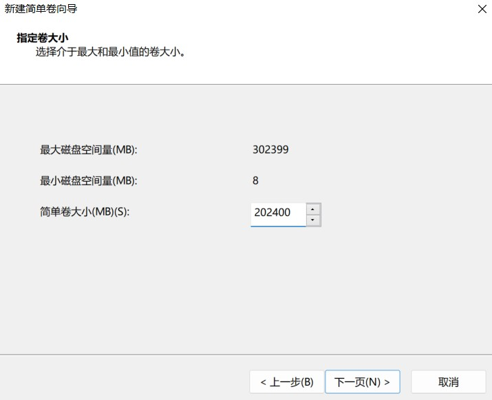 第十步：分配驱动器号和路径 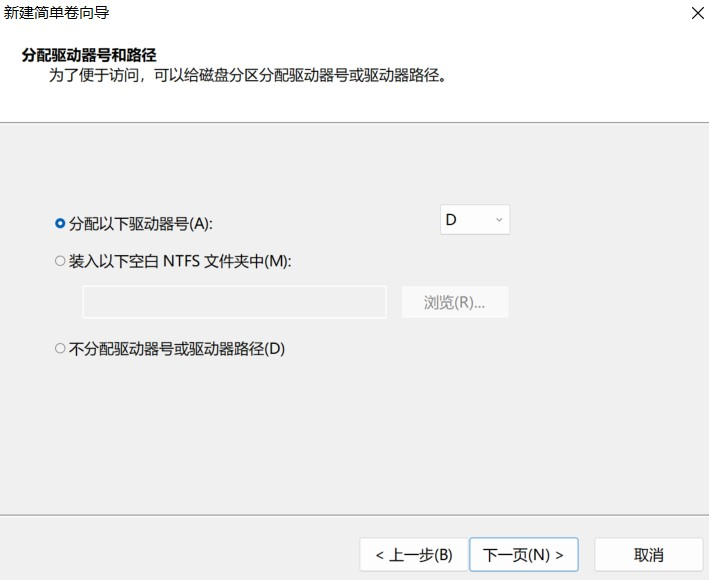 第十一步：格式化分区 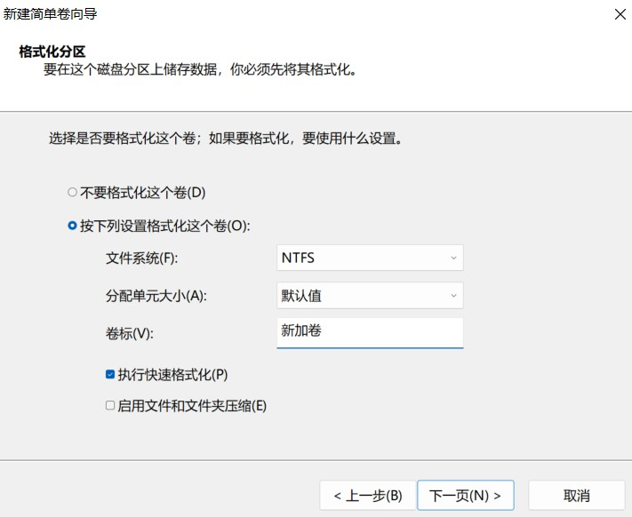 第十二步：完成新建简单卷 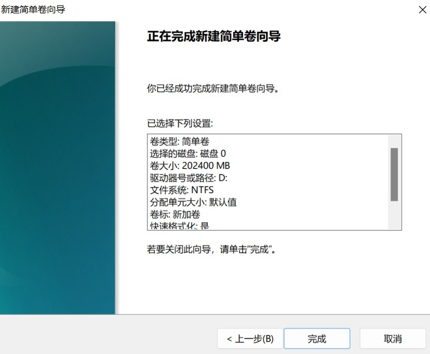 第十三步：成功添加新加卷D 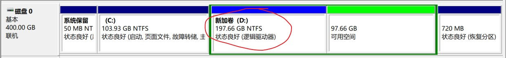 第十四步：可用空间新建E盘 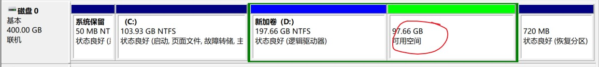 第十五步：重复第七步到第十二步 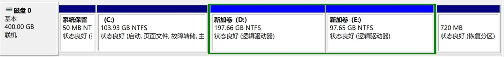 第十六步：此电脑显示 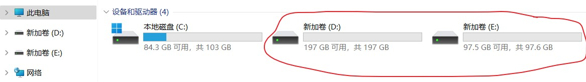 第十七步：更改卷名，方便日常使用和重装系统 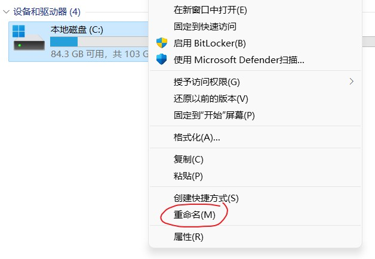 如图 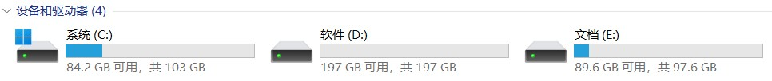更改快速访问存储位置
第一步：D盘在D盘中创建以下文件夹
（ps：在磁盘中创建文件夹作为它们的位置，是因为日后想更改可以随时更改，但直接选择磁盘的话，一旦确定再想更改位置，唯有重装系统才可以从头再来。）